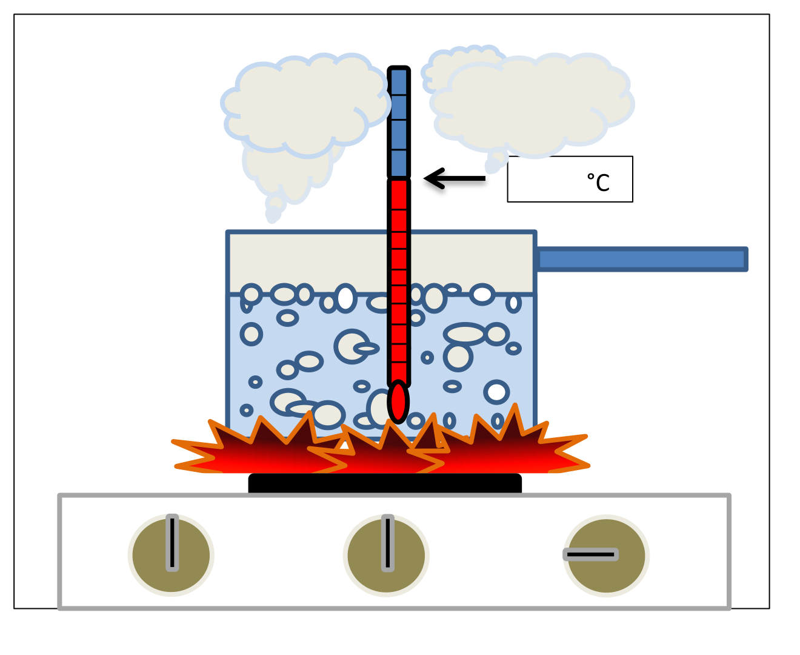

Thème / DomaineLa relation entre pression et température, cycle frigorifique approfondi
Module THÉORIE S4-T1 · 2 hCycle approfondi P/T
SéquenceS4 · sem. 12
Nom________________
Prénom________________
Date________________
Positionnement01234
Tâches
Pas de tâche d'atelier ce jour — cours en classe entière
Ce que je vais apprendre
Comprendre pourquoi un liquide bout à une température différente selon la pression, et faire le lien avec la machine frigorifique : c'est ainsi qu'elle « fabrique » le froid
Savoir-être
Observer avant d'affirmer · être honnête dans mon auto-positionnement
Compétence
Appui — aucune compétence positionnée ce cours prépare la relation P/T qui sera relevée sur machine dans S4-F1 et évaluée dans É2 (semaine 13)
Accroche — la casserole qui bout
Le pavillon du chantier va bientôt recevoir la mise en service de son climatiseur. Avant de régler une machine
frigorifique, il faut comprendre un phénomène tout simple, que vous connaissez déjà dans la vie de tous les
jours : l'eau qui bout dans une casserole.

D'après le manuel de physique du froid du lycée Jacques Raynaud.
Question de départ — À votre avis, à quelle température l'eau bout-elle ?
Notez votre réponse, même si vous n'êtes pas sûr(e). Cette question va rester ouverte pendant toute la
démonstration qui va suivre : on va vérifier ensemble, avec un vrai thermomètre plongé dans une vraie casserole.
D'après moi, l'eau bout à _____________ °C.
Ce que vous savez déjà (rappel S3)
En S3-T1, vous avez appris à nommer les 13 composants d'une
installation frigorifique réelle, et vous avez revu la croix du frigoriste : détendeur GAUCHE,
compresseur DROITE, condenseur HAUT, évaporateur BAS. Vous savez que le fluide frigorigène
change d'état dans le condenseur (il devient liquide) et dans l'évaporateur (il devient gaz). Aujourd'hui,
vous allez comprendre pourquoi le fluide change d'état exactement à ces deux endroits, et pas ailleurs :
la réponse tient en un mot, la pression.
Ce qui change depuis S3 — En S3, vous avez observé et nommé. Aujourd'hui,
vous allez comprendre le mécanisme : la pression choisit la température à laquelle un liquide change
d'état. É2 arrive en semaine 13 : la relation P/T y sera évaluée à l'écrit, avec les 9 fonctions des composants
vues en S3-T1.
Le professeur fait chauffer de l'eau dans une casserole et plonge un
thermomètre dedans. Consigne unique : observez le thermomètre et notez la température toutes les
2 minutes dans le tableau ci-dessous. Ne vous approchez pas de la casserole : l'eau et la vapeur sont brûlantes,
c'est le professeur seul qui manipule la source de chaleur.
Temps (min)
0
2
4
6
8
10
12
Température lue (°C)
Question 1 — Au début, la température monte vite. Que se passe-t-il ensuite,
quand elle approche de 100 °C ? Continue-t-elle à monter au même rythme, plus vite, ou s'arrête-t-elle
d'augmenter ?
Ce que dit le manuel — « 100 °C = seuil d'ébullition de l'eau à la pression
atmosphérique. » Autrement dit : tant que l'eau est liquide, la flamme fait monter sa température. Mais dès que
l'eau atteint 100 °C, à la pression normale de l'atmosphère, elle se met à bouillir — et sa température
reste bloquée à 100 °C, même si vous poussez le feu au maximum.
La chaleur latente — l'énergie « qui n'augmente pas la température »
Quand l'eau est à 100 °C et qu'elle bout, la flamme continue à lui
donner de la chaleur. Cette chaleur ne sert plus à faire monter la température (elle est bloquée à 100 °C) :
elle sert à faire changer d'état l'eau, c'est-à-dire à la transformer en vapeur. D'après le manuel, cette
énergie s'appelle la chaleur latente de vaporisation : « la quantité de chaleur qu'il faut fournir à 1 kg
d'eau, à pression et température constantes, pour obtenir 1 kg de vapeur ». On dit que l'eau « attend » : elle
encaisse l'énergie sans se réchauffer, et l'utilise entièrement pour changer d'état.
Complétez : quand une casserole d'eau bout, la source de chaleur ne
peut plus faire ______________ la température de l'eau, mais elle continue à faire ______________ son état
physique.
Petite précision de vocabulaire : le thermomètre de
la démonstration affiche des degrés Celsius (°C). Il existe une autre échelle de température, le Kelvin (K),
utilisée en physique — vous la retrouverez plus loin dans votre formation.
Question 2 — Relisez la phrase du manuel : « 100 °C = seuil d'ébullition de
l'eau à la pression atmosphérique ». Cette précision n'est pas un hasard : elle veut dire que le seuil de
100 °C n'est vrai que pour une pression donnée, celle de l'air autour de nous. Alors, d'après vous : si la
pression était plus basse qu'au niveau de la mer — par exemple en altitude, en montagne — est-ce que l'eau
bout à une température plus haute, plus basse, ou toujours à 100 °C ?
Piste à discuter, pas une valeur à retenir — Cette question ouvre une
discussion en classe : le professeur vous donnera des éléments de réponse, mais aucune valeur chiffrée précise de
température d'ébullition en altitude n'est affirmée dans ce document. Si un chiffre exact vous intéresse, il est
à faire valider avec votre professeur, sur son manuel.
Ce qu'il faut retenir
La pression choisit la température à
laquelle un liquide change d'état.
Baissez la pression : le liquide bout à une température plus basse.
Augmentez la pression : il faut une température plus haute pour le faire bouillir — et à l'inverse, un gaz se
recondense plus facilement (à une température plus haute) si sa pression est haute.
La transposition sur la machine frigorifique
C'est exactement ce principe qu'utilise une machine frigorifique, avec un fluide
frigorigène à la place de l'eau.
Organe (croix du frigoriste)
Pression
Ce qui se passe
Évaporateur — BAS
BASSE
Le fluide BOUT (liquide → gaz) à basse température : il absorbe la chaleur de l'air ambiant. C'est comme ça qu'on « fabrique » le froid.
Condenseur — HAUT
HAUTE
Le fluide SE CONDENSE (gaz → liquide) à haute température : il rend la chaleur qu'il avait absorbée.
Le détendeur (GAUCHE) fait chuter la pression
juste avant l'évaporateur ; le compresseur (DROITE) fait monter la pression juste avant le condenseur. C'est
exactement le rôle que vous avez donné à ces deux organes en S3-T1.
Le phénomène de condensation, vécu au quotidien
D'après le manuel : la buée qui se dépose sur une vitre froide, ou sur les parois
d'une bouteille qui sort du réfrigérateur, c'est de la vapeur d'eau qui rencontre une paroi froide. Elle
cède de la chaleur à cette paroi en se condensant : c'est un échange d'énergie, la paroi devient
plus chaude et la vapeur redevient liquide.
Question 3 — Dans le condenseur de la machine, quelle est la « paroi
froide » qui reçoit la chaleur cédée par le fluide qui se condense ?
Exercice 1 — placer l'ébullition et la condensation sur la croix du frigoriste
Vous connaissez la croix du frigoriste. Rappel de la convention, qui ne change
jamais : détendeur GAUCHE · compresseur DROITE · condenseur HAUT · évaporateur BAS.
La croix du frigoriste, vue en S1 et S3-T1.Le même cycle, vu comme un circuit réel. Les couleurs suivent le fluide : rouge = gaz chaud haute pression au refoulement du compresseur · orange = liquide haute pression en sortie de condenseur (vers le détendeur) · bleu foncé = basse pression après le détendeur (vers l'évaporateur) · bleu clair = vapeur basse pression à l'aspiration. La croix ci-dessus sert à mémoriser la disposition ; ce schéma montre la circulation et les changements d'état. Source : F. Henninot.
Banque de mots — évaporateur · condenseur · basse · haute · bout (s'évapore) · se
condense
Question
Ma réponse
Où le fluide BOUT-il (il passe de liquide à gaz) ?
La pression y est-elle basse ou haute ?
Où le fluide SE CONDENSE-t-il (il passe de gaz à liquide) ?
La pression y est-elle basse ou haute ?
Lien avec S4-F1 (cette semaine, en atelier)
Cette semaine, en atelier, vous allez vérifier ce principe sur une vraie
machine, lors du rallye de relevés en stations : à chaque station, vous lirez la pression au manomètre,
vous lirez la température correspondante sur la réglette P/T de l'atelier, puis vous mesurerez la
température réelle avec un thermomètre de sonde, et vous comparerez. Ce que vous venez de comprendre en théorie,
vous allez le CONSTATER sur la machine.
Chaque fluide frigorigène a sa propre relation entre pression et température :
à une pression donnée, CE fluide-là bout ou se condense à UNE température précise, qui n'est pas la même que
pour un autre fluide. Un professionnel n'a pas besoin de calculer cette relation : il la lit sur une
réglette P/T (un petit outil que l'on trouve dans tous les ateliers), ou sur l'écran d'un manifold. En
1re année, vous ne manipulez aucun fluide frigorigène : vous apprenez seulement à lire une réglette.
📄 Ressource fournie — table pression/température. Pour lire une température de saturation à partir d'une pression (ou l'inverse), utilisez la réglette P/T multi-fluides ou la table du fluide de votre banc : R134a · R404A · R410A. N'inventez jamais une valeur : lisez-la sur la table.
Aucune valeur chiffrée dans ce document — Ce tableau est à compléter
uniquement avec la réglette réelle de l'atelier, avec votre professeur. Aucun couple pression/température
de fluide frigorigène n'est donné ici de mémoire : une valeur non vérifiée sur la réglette serait une erreur.
Fluide (à préciser)
Pression lue (selon la réglette de l'atelier)
Température de changement d'état lue (selon la réglette de l'atelier)
Question 4 — Sur la réglette, si vous augmentez la pression, que fait la
température de changement d'état affichée en face : elle monte, elle descend, ou elle ne change pas ?
Ce principe de lecture est le même que celui du rallye S4-F1 : sur la machine, vous
lirez une pression au manomètre puis vous chercherez, sur la réglette, la température correspondante — exactement
comme dans ce tableau. C'est aussi ce principe qui sera évalué à l'écrit lors d'É2, semaine 13 (lecture d'une
réglette ou d'un tableau fourni).
Complétez ce tableau avec la correction donnée en classe : c'est votre trace écrite,
à garder pour vous aider en atelier S4-F1 et pour É2.
Ce que j'ai découvert
Ce que je retiens
La casserole qui bout
Le seuil de 100 °C
La chaleur latente
Et si on change la pression ?
Dans l'évaporateur (BAS)
Dans le condenseur (HAUT)
La réglette P/T
La phrase à retenir
« La pression choisit
la température de changement d'état. »
Auto-positionnement
Échelle FrigorX : 0 Non évalué · 1 Non acquis · 2 En cours
d'acquisition · 3 Acquis · 4 Parfaitement maîtrisé. Ce module est un appui : aucune compétence n'est
positionnée, la grille sert uniquement de repère personnel avant É2.
Ce que je sais faire
0 Non évalué
1 Non acquis
2 En cours d'acquisition
3 Acquis
4 Parfaitement maîtrisé
Expliquer pourquoi la pression choisit la température de changement d'état, et placer ébullition/condensation sur la croix du frigoriste Appui — non noté
Compétence non observée ce jour.
Je ne relie pas la pression et la température de changement d'état, même avec de l'aide.
Je sais que la pression joue un rôle, mais j'ai besoin d'aide pour placer évaporateur/condenseur.
Je sais expliquer seul(e) pourquoi l'évaporateur « fabrique » le froid grâce à la basse pression.
Comme « Acquis », et je sais lire une réglette P/T avec de l'aide.
Savoir-être — j'observe avant d'affirmer, je suis honnête dans mon auto-positionnement
Non observé.
J'affirme sans avoir observé la démonstration.
J'observe mais j'ai besoin d'un rappel pour ne pas répondre trop vite.
J'observe avant d'affirmer, je remplis mon auto-positionnement seul(e) et honnêtement.
Comme « Acquis », et j'aide un camarade à comprendre la démonstration.
Comprendre la relation P/T et la placer sur la croix :
01234
Ce cours n'est pas noté sur École Directe : il
prépare directement le rallye de relevés de S4-F1 (cette semaine) et le poste théorie d'É2 (semaine 13).
D'après : « Le froid — exercices
élèves » et son corrigé, manuel de physique du froid du Lycée Jacques Raynaud (Enseignement Professionnel,
02_CAP-IFCA/S1-Analyse) — sections « Le condenseur : le phénomène de condensation », « La chaleur latente (l) »,
« La chaleur sensible ». La phrase « 100 °C = seuil d'ébullition de l'eau à la pression atmosphérique » et les
définitions de la chaleur latente de vaporisation/condensation sont reprises telles quelles de ce manuel.
Illustration de la casserole en ébullition extraite du même document. Schéma « La Croix du Frigoriste »
(F. Henninot, 2026), convention identique à S1-T1 et S3-T1. Aucune valeur de température d'ébullition en altitude
ni aucun couple pression/température de fluide frigorigène n'est affirmé dans ce document : ces valeurs sont à
lire sur la réglette P/T réelle de l'atelier, avec le professeur.